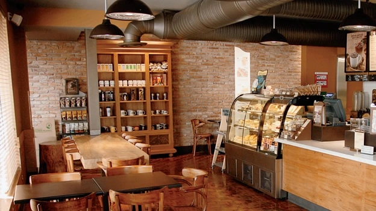

Las cafeterías son lugares donde se puede disfrutar de una buena taza de café mientras se socializa o se trabaja. Pero, ¿sabías que las cafeterías tienen un origen interesante? El primer registro de una cafetería data del siglo XVI en Estambul, Turquía, donde se servía café recién hecho a los clientes. Sin embargo, las cafeterías no se popularizaron en Europa hasta el siglo XVII, cuando los cafés se convirtieron en lugares de encuentro para intelectuales y artistas. En el siglo XVIII, las cafeterías se extendieron a América del Norte y se convirtieron en lugares de reunión para políticos y hombres de negocios. Fue en este momento cuando se empezaron a servir diferentes variedades de café, como el café con leche y el café expreso. Con el paso del tiempo, las cafeterías se han convertido en lugares emblemáticos en muchas ciudades del mundo, y han evolucionado para adaptarse a las necesidades y gustos de los clientes. Desde cafeterías temáticas hasta cafeterías con opciones veganas, hoy en día hay una cafetería para todos los gustos.
